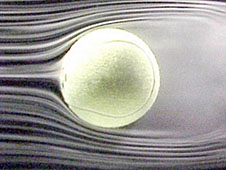
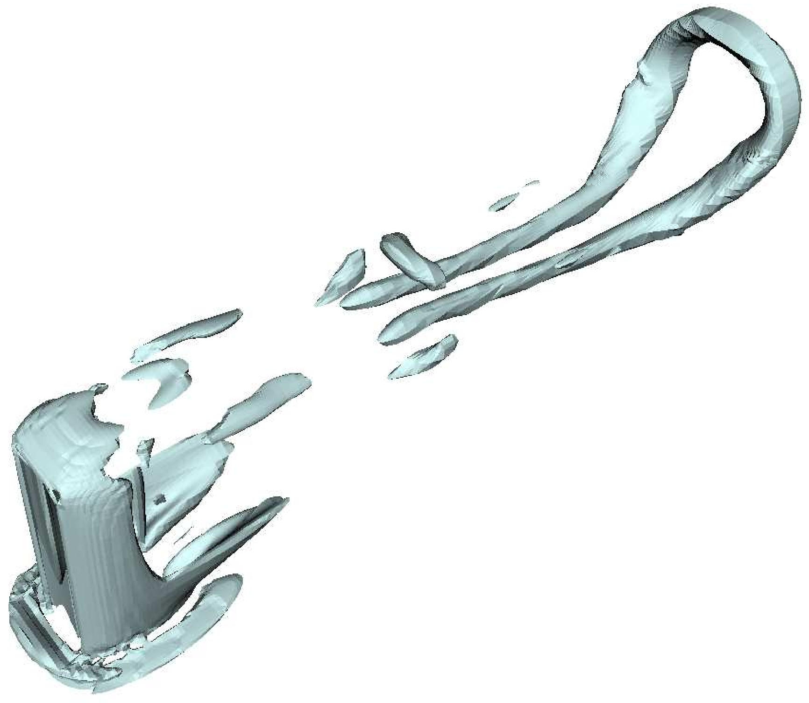
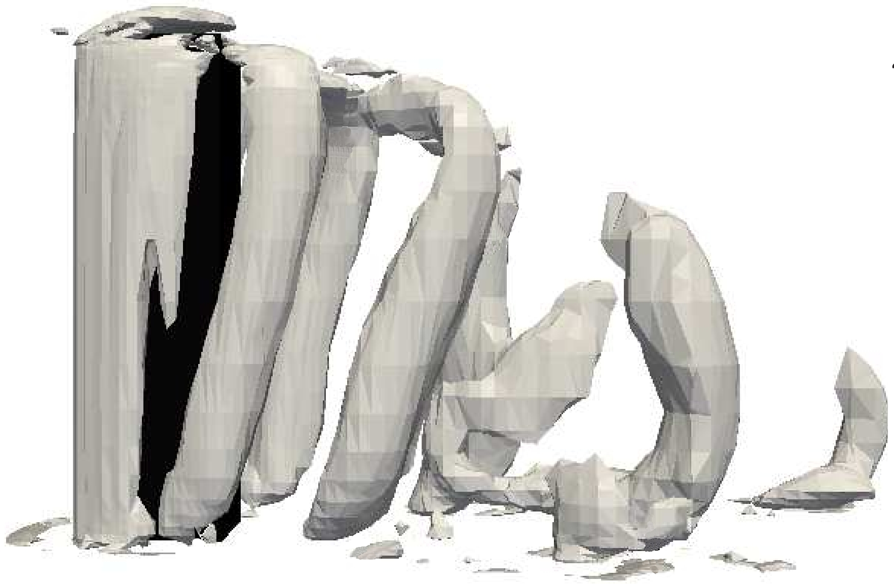

Separated flows
Flow separation is one the classical phenomena of fluid dynamics and it is
ubiquitous. Car manufacturers often display pictures of wind tunnels
where the flow around the car is visualised with smoke filaments. These
closely follow the contour of the car up to the sharp angles at the back,
where they inevitably separate from it. A region of low pressure develops
there that "pulls" the car back and increases petrol consumption. Low pressure
sucks the flow in this region, where it generates complex vortex structures that soon shed downstream. Similar effects happen at all scales, around mountains, sky-scrapers, tennis balls or air-cooled computer components.
The shape and orientation of the shed vortices determine the feedback
force the flow exerts on the obstacle. But because vortices strongly mix the
fluid and everything it carries, they also dictate the ability of the wake
to transfer heat and chemicals. For this reason, it is common to
place obstacles inside heat exchangers, or to alter the shape of ducts
to control flow separation and increase the efficiency of the device.
When the fluid is electrically conducting, these structures can be affected by
an external magnetic field. This happens for instance in the cooling-breeding
blankets of thermonuclear fusion reactors, which use a liquid metal as heat
carrier, or when a probe is inserted in a liquid metal flow and generates
unwanted vortices in its wake. We use shallow water models and 3D Direct
Numerical Simulations to explore the fine structure of these flows, and dissect
the vortex shedding mechanisms, in generic geometries such as 2D and 3D
obstacles, and U-bends.
|  |  |  |
| flow separation at the back of a tennis ball (NASA) | Shedding of hairpin vortices in the wake of a 3D rectangular obstacle, no magnetic field applied [read article] | Vortex Shedding in the wake of a 3D rectangular obstacle, with a spanwise magnetic field [read article] |